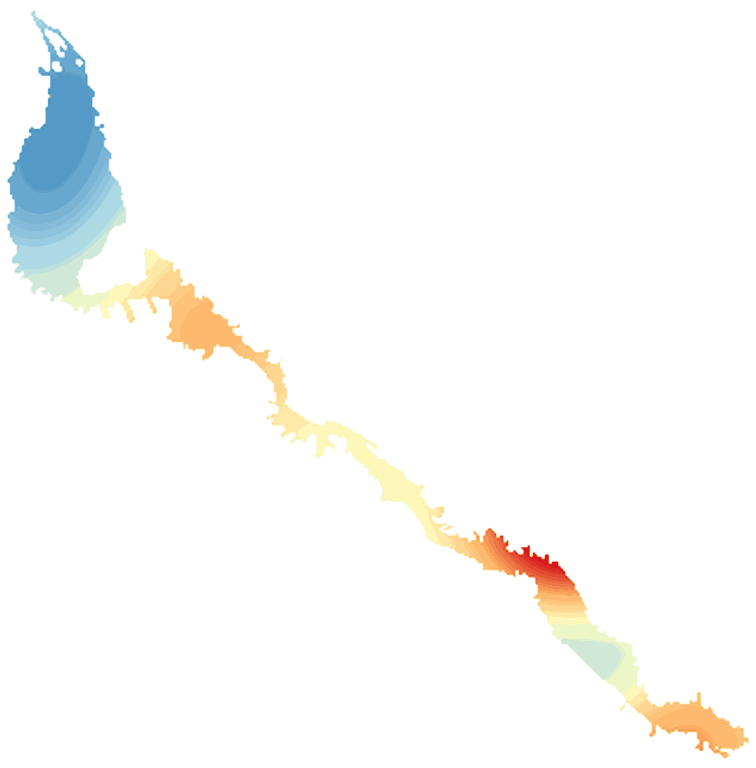

LakeScope › AZ
Lake Havasu today
Updated 2026-11-26 - Atlas Labs
Slightly murky, 61°F water, level rising, near normal, calm this morning.
Water level
447.13 ft
Bureau of Reclamation - 2026-11-24
7-day trend: rising (+0.19 ft). Compared with normal for this date: -0.5 ft (same weeks, 2016-2025).
Water clarity and algae
Slightly murky Last clear view: a few days ago.
Surface temperature
61°F
seen from space on 2026-11-23

Weather, next 3 days
| Day | Sky | High / low | Wind | Rain |
|---|---|---|---|---|
| Thursday | Sunny | 75 / 54°F | 9 mph WNW | 0% |
| Friday | Mostly Sunny | 76 / 55°F | 5 mph NNW | 0% |
| Saturday | Partly Sunny | 77 / 54°F | 5 mph NNW | 0% |
Sunrise 06:21 - sunset 16:27 - Full moon. National Weather Service.
Get the LakeScope app: alerts and the 3-D view of Lake Havasu